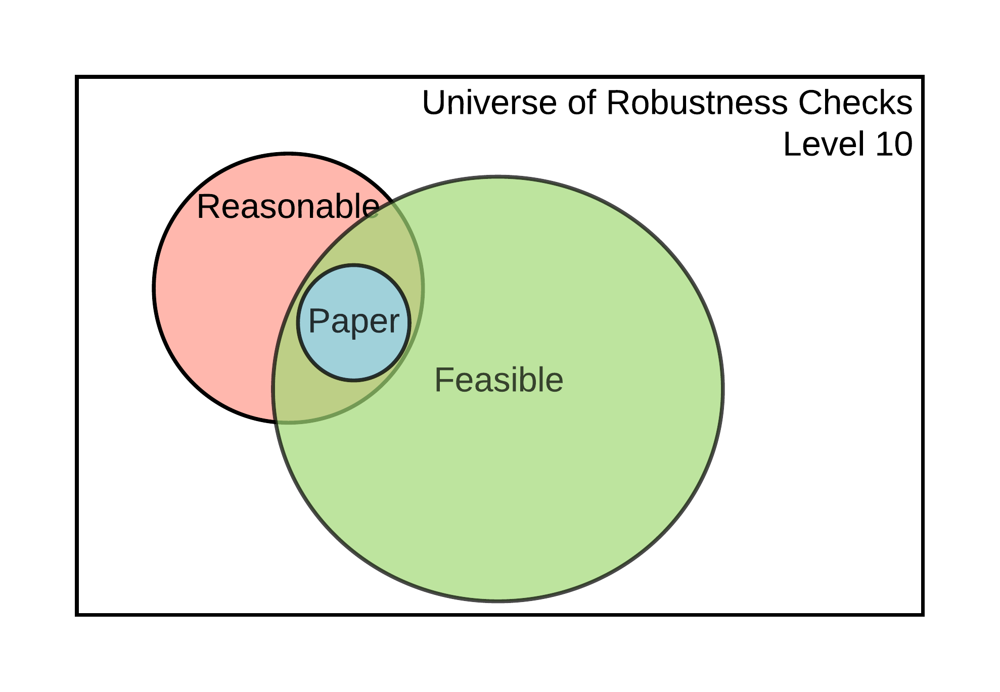
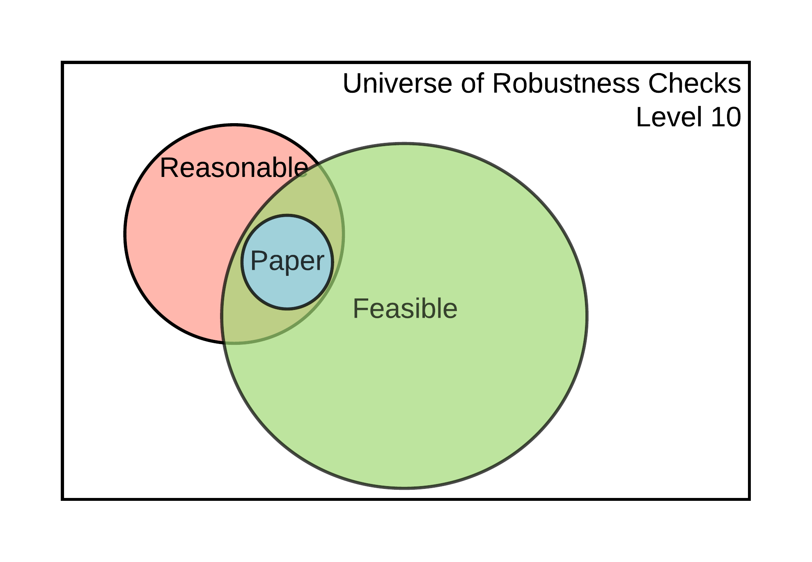

Chapter 4 Checking for Robustness
Once you have assessed, and potentially improved, the computational reproducibility of the display items for a claim within a paper, you can assess the robustness of these results by modifying some analytic choices and reporting their subsequent effects on the estimates of interest, i.e. conducting robustness checks. The universe of robustness checks can be very large (potentially infinite!) and they can pertain to both data analysis and data cleaning. In these guidelines, we will distinguish between reasonable and feasible robustness checks.
Reasonable robustness checks (Simonsohn et. al., 2018) are defined as (i) sensible tests of the research question, (ii) expected to be statistically valid, and (iii) not redundant with other specifications in the set. The set of feasible robustness checks is defined by all the specifications that can be computationally reproduced. We assume that the specifications already published in the paper are part of the reasonable set of specifications.
 

Figure 4.1: Universe of robustness tests and its elements
The size of the feasible set of robustness checks, and the likelihood that it contains reasonable specifications, will depend on the current level of reproducibility of the results supporting a claim. This is illustrated in Figure 4.1. At levels 1-2, it won’t be possible to perform additional robustness checks because there is no data to work with. It may be possible to perform additional robustness checks for claims supported by display items reproducible at levels 3-4, but not using the specific estimates declared in the Scoping Stage since the display items are not computationally reproducible from analysis data (lacking CRA). It is possible to conduct additional robustness checks to validate the core conclusions of a claim based on a display item reproducible at level 5. Finally, claims associated with display items reproducible at level 6 or higher allow for robustness checks that involve variable definitions other types of analytical choices.
The size of feasible robustness checks grows exponentially as higher levels of computational reproducibility are achieved. For example, when checking the robustness to a new variable definition, you will also be able to test the combination of how the main estimate changes under an alternative variable definition and an alternative variable definitions.
Robustness is assessed at the claim level (see our diagram representing a paper’s components 0.3). For a given claim, there will be several specifications presented, one of which will be identified by the authors (or yourself if the authors did not identify one) as the main or preferred specification. Identify which display item contains this specification and refer to the reproduction tree to identify the code files in which you can modify a computational choice. Using the example tree discussed in the Assessment stage, we can obtain the following (we removed the data files for simplicity). This simplified tree provides a list of potential files in which you can test different specifications:
table1.tex (contains preferred specification of a given claim)
|___[code] analysis.R
|___[code] final_merge.do
|___[code] clean_merged_1_2.do
| |___[code] merge_1_2.do
| |___[code] clean_raw_1.py
| |___[code] clean_raw_2.py
|___[code] clean_merged_3_4.do
|___[code] merge_3_4.do
|___[code] clean_raw_3.py
|___[code] clean_raw_4.pyHere we suggest two types of contributions to robustness checks: (1) increasing the number of feasible robustness checks by identifying key analytical choices in code scripts, and (2) justifying and testing reasonable specifications within the set of feasible checks. Both contributions should be recorded on the SSRP Platform and refer to specific files in the reproduction package.
4.1 Feasible robustness checks: increasing the number of feasible specifications
Increasing the number of feasible robustness checks requires that you, as the reproducer identify the specific line(s) in the code scripts that execute an analytical choice. An advantage of this type of contribution is that you don’t need to have an in-depth knowledge of the paper and its methodology to contribute. This allows you to potentially map several code files, achieving a broader understanding of the paper, and also building on top of the work of others. The disadvantage is that you are not expected to test and justify the reasonableness of an alternative specifications.
Analytical choices can include those behind data cleaning and data analysis. Below are some proposed types for each category.
Analytical choices in data cleaning code
- Variable definition
- Data sub-setting
- Data re-shaping (merge, append, long/gather, wide/spread)
- Others (specify as “processing - other”)
Analytical choices in analysis code
- Regression function (link function)
- Key parameters (tuning, tolerance parameters, etc.)
- Controls
- Adjustment of standard errors
- Choice of weights
- Treatment of missing values
- Imputations
- Other (specify as “methods - other”)
To record a specific analytical choice in the ACRE platform, please follow these steps:
Review a specific code file (e.g.
clean_merged_1_2.do) and identify an analytical choice (e.g.regress y x if gender == 1).Record the file name, line number, reproduction package (original or name of revised version), choice type, and choice value. For the
sourcefield, type “original” whenever the analytical choice is identified for the first time, andline numbereach time the same analytical choice is applied thereafter (for example, if an analytical choice is identified for the first time in line #103 and for the second time in line #122 their respective values for thesourcefield should beoriginaland103). For each analytical choice recorded, add the specific choice used in the paper and, optionally, describe what alternatives could have been used. The resulting database should have the following structure:
| entry_id | file_name | line_number | choice_type | choice_value | choice_range | Source |
|---|---|---|---|---|---|---|
| 1 | code_01.do | 73 | data sub-setting | males | males, female, | original |
| 2 | code_01.do | 122 | variable definition | income = wages + capital gains | wages, capital gains, gifts | “code_01.do-L103” |
| 3 | code_05.R | 143 | controls | age, income, education | age, income, education, region | original |
| … | … | … | … | … | … | … |
4.2 Reasonable robustness check: justifying and testing.
Justifying and testing a specific analytical choice requires that the reproducer identifies a feasible analytical choice, conducts a variation on it, and justifies its reasonableness. The advantage of this approach is that it allows for an in-depth inspection of a specific section of the paper. The main limitation is that justifying sensibility and validity (and non-redundancy, to an extent) requires a deeper understanding of the paper’s topic and the methods, making it less feasible for undergraduate students or graduates with only a surface-level interest in the paper and limited time.
When performing a specific robustness check, follow these steps:
Search the database of feasible robustness checks (discussed above) and record the identifier(s) corresponding to the analytical choice to test (
entry_id). If there is no entry corresponding for the specific lines, create one yourself.Propose a specific variation to this analytical choice.
Discuss whether you think this variation is sensible, specifically in the context of the claim tested (e.g., does it make sense to include or exclude low-income Hispanic people from the sample when assessing the impact of a large wave of new inmigrants?).
Discuss how this variation could affect the validity of the results (e.g., likely effects on omitted variable bias, measurement error, change in the Local Average Treatment Effects for the underlying population).
Confirm that test is not redundant with other tests in the paper or robustness exercise.
Report the results from the robustness check (new estimate, standard error, and units)[is what’s in the brackets the suggested reporting format for this – if so, be explicit about it].